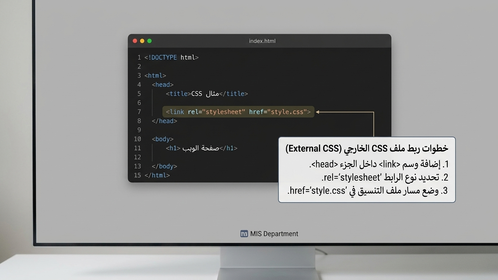
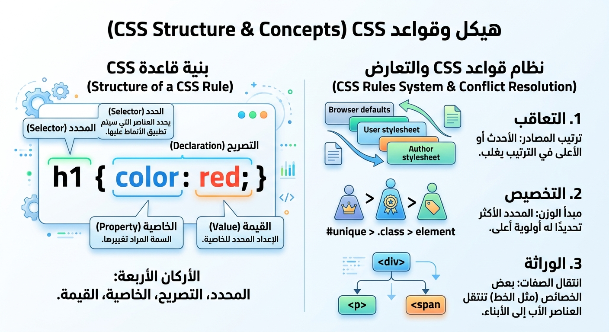

الاسم : ملك جمال محمد محمد
السكشن : 146
رقم الجامعي 2502997
ماده : تطبيقات الانترنت و منصات الالكترونيه
ﻹﺿﺎﻓﺔ اﻷﻟﻮان وﺗﻨﺴﯿﻖ ﺻﻔﺤﺎت اﻟﻮﯾﺐ؛ ﻓﮭﻲ اﻟﻤﺴﺆوﻟﺔ CSS ﺗُﺴﺘﺨﺪم ﻟﻐﺔواﻟﻤﺘﺤﻜﻤﺔ ﻓﻲ اﻟﻤﻈﮭﺮ اﻟﺨﺎرﺟﻲ ﻟﻠﻤﻮﻗﻊ، ﻛﻤﺎ أﻧﮭﺎ ﻣﺘﻜﻔﻠﺔ ﺑﺘﻨﻈﯿﻢ ﺷﻜﻞ اﻟﺼﻔﺤﺔ ﻟﺘﺼﺒﺢ . ﻣﺮﯾﺤﺔ ﻟﻠﻌﯿﻦ وﺳﮭﻠﺔ اﻻﺳﺘﺨﺪام، وﻣﻦ ﻏﯿﺮھﺎ ﻻ ﺣﯿﺎة وﻻ أﻟﻮان ﻓﻲ ﻋﺎﻟﻢ اﻟﻮﯾﺐ أﻣﺎ ﻋﻦ دورھﺎ وﻣﮭﻤﺘﮭﺎ اﻷﺳﺎﺳﯿﺔ، ﻓﮭﻲ إﻋﻄﺎء اﻟﺸﻜﻞ واﻟﺸﺨﺼﯿﺔ ﻟﻠﻤﻮﻗﻊ، وﺗﺤﻮﯾﻞ اﻟﻨﺼﻮص واﻟﺮواﺑﻂ اﻟﻤﺒﺎﺷﺮة إﻟﻰ أزرار ﺟﻤﯿﻠﺔ وﺟﺬاﺑﺔ وﻗﻮاﺋﻢ ﻣﺮﺗﺒﺔ، ﺑﺎﻹﺿﺎﻓﺔ إﻟﻰ إﺿﺎﻓﺔ اﻟﺨﻠﻔﯿﺎت واﻟﺘﻨﺴﯿﻘﺎت ﻟﻠﻤﻮﻗﻊ، واﻟﺘﺤﻜﻢ ﻓﻲ اﻟﻤﺴﺎﻓﺎت اﻟﮭﺎﻣﺸﯿﺔ ﺣﺘﻰ ﻻ ﺗﺒﺪو . اﻟﻌﻨﺎﺻﺮ ﻣﺘﺪاﺧﻠﺔ أو ﻏﯿﺮ ﻣﻨﻈﻤﺔ ﺳﻮف ﻧﺘﻨﺎول ﻓﻲ ھﺬا اﻟﺒﺤﺚ أھﻤﯿﺔ اﻟﻠﻐﺔ ﻓﻲ ﺗﺼﻤﯿﻢ ﻣﻮاﻗﻊ اﻟﻮﯾﺐ اﻟﺤﺪﯾﺜﺔ، وﻛﯿﻒ «ﻛﻌﺎﻣﻞ رﺋﯿﺴﻲ ﻓﻲ ﺗﺤﻮﯾﻞ ﺻﻔﺤﺎت اﻟﻮﯾﺐ ﻣﻦ ﻣﺠﺮد ھﯿﻜﻞ ﺟﺎﻣﺪ CSS ﺗﻌﻤﻞ وﻧﺼﻮص ﺑﺎھﺘﺔ إﻟﻰ واﺟﮭﺎت ﺗﻔﺎﻋﻠﯿﺔ ﻣﺮﯾﺤﺔ ﻟﻠﻌﯿﻦ، ودورھﺎ ﻓﻲ ﺗﻨﺎﺳﻖ اﻷﻟﻮان واﻟﺨﻄﻮط وﺟﻌﻞ اﻟﻤﻮﻗﻊ ﻣﺘﺠﺎوﺑﺎ ً وﻣﺘﻨﺎﺳﻘﺎ ً اﻟﺘﻲ ﺗُﺒﻨﻰ ﻋﻠﯿﮭﺎ اﻷﺳﺎس، HTML وﻛﯿﻒ ﯾﺘﻢ رﺑﻂ ﻟﻐﺔ ﺗﺼﻤﯿﻢ اﻟﮭﯿﻜﻞ ﻟﻤﻮﻗﻊ اﻟﻮﯾﺐ اﻟﻮﯾﺐ ؟ اﻟﺘﻲ ﺗﻤﻨﺢ اﻟﺤﯿﺎة واﻟﺮوح واﻷﻟﻮان ﻟﻠﻤﻮﻗﻊ CSS ﺑـﻠﻐﺔ
تعريف لغة CSS واختصارها Cascading Style Sheets تعني أوراق الأنماط المتتالية يعني اننا ننشا أوراقا او ملفات خاصه التنسيق والألوان وتكون متتالية وانها الطريقه التي نضيف بيها الأوان والروح في تصميم الموقع .
طُرحت الفكرة لأول مرة عام 1994 بواسطة العالم هاكون فيوم لي (Håkon Wium Lie) الذي كان يعمل مع مرسل الويب الأول تيم بيرنرز لي في منظمة
CERN. جرى إطلاق الإصدار الأول رسمياً عام 1996 تحت إشراف منظمة W3C (منظمة شبكة الويب العالمية). جاءت CSS لحل مشكلة كبرى واجهت المطورين، وهي التداخل المعقد بين محتوى الصفحة وطريقة عرضها، مما جعلها الثورة الحقيقية التي شكلت مظهر الإنترنت الحديث الذي نراه اليوم.
هناك ثلاث طرق أساسية لتطبيق كود CSS على عناصر HTML ، ولكل طريقة استخدامها المناسب أ. التنسيق الخارجي: (External CSS) تُكتب الأكواد في ملف منفصل تماماً ينتهي بامتداد ( css. مثل style.css)، ويتم ربطه داخل وسم \head\ في صفحة HTML باستخدام وسم \link\.

واﻷرﻛﺎن اﻟﺛﻼﺛﺔ (Syntax) ﺗرﻛﯾب وﻗواﻋد ﻛﺗﺎﺑﺔ اﻟﻛود :(Rule Set) ﻗﺎﻋدة اﻟﺗﻧﺳﯾﻖ ﻣن ﺑﻧﯾﺔ ﺛﺎﺑﺗﺔ ﺗﺳﻣﻰ CSS ﯾﺗﻛون أي ﺳطر ﺑرﻣﯾﺟﻲ ﻓﻲ { selector } property: value

تطورت لغة CSS عبر مراحل لملائمة القفزات التكنولوجية في الويب:
مع طفرة الهواتف الذكية والأجهزة اللوحية، أصبح من المستحيل تصميم موقع بمقاس ثابت. وهنا تبرز أهمية CSS في تقديم التصميم المتجاوب.تعتمد هذه التقنية بشكل أساسي على استعلامات الوسائط (Media Queries). تتيح Media Queries للمتصفح فحص مواصفات الجهاز الذي يعرض الموقع (مثل عرض الشاشة بالبكسل)، وبناء عليه يقوم بتطبيق كود تنسيق مخصص لذلك الجهاز.
مثال عملي: يمكن جعل القائمة الجانبية للموقع تظهر في جهة اليمين على شاشات الكمبيوتر الكبيرة، ولكن عند فتح الموقع من الهاتف، تتحول تلقائياً لتصبح في أسفل الصفحة أو تختفي داخل زر "همبرجر" لتوفير المساحة، مما يضمن تجربة مستخدم (UX) ممتازة على كل الأجهزة.| الإصدار | سنة الإطلاق | أبرز الميزات والخصائص |
|---|---|---|
| CSS1 | 1996 | التنسيقات الأساسية والبسيطة مثل ألوان النصوص، الخطوط، الخلفيات، ومحاذاة النصوص. |
| CSS2 | 1998 | تحديد أماكن العناصر بدقة (Positioning)، دعم قارئات الشاشة للأصوات، وتنسيقات الطباعة. |
| CSS3 | 1999 - الآن | نظام الوحدات (Modules)، الحواف المستديرة، الظلال، الألوان الشفافة، التدرجات، الانيميشن، وأنظمة توزيع العناصر الحديثة (Flexbox و CSS Grid). |
| العنصر / المفهوم | المسمى الإنجليزي | الوظيفة والشرح |
|---|---|---|
| المحدد | Selector | العنصر المراد تطبيق التنسيق عليه (مثل وسم p، أو class.، أو id#). |
| الخاصية | Property | الصفة المراد تغييرها داخل التصريح (مثل color أو font-size). |
| القيمة | Value | النتيجة المطلوبة للخاصية (مثل red أو 20px). |
| التعاقب | Cascade | تنفيذ التنسيق الأخير (في أسفل الكود) عند تكرار نفس التنسيق لنفس العنصر. |
| التخصيص | Specificity | الأولوية للتنسيق الأكثر تحديداً عند التعارض (id# أقوى من class. والأخيرة أقوى من الوسم العادي). |
| الوراثة | Inheritance | انتقال بعض الصفات (كالخطوط والألوان) تلقائياً من العنصر الأب إلى العناصر الابن. |